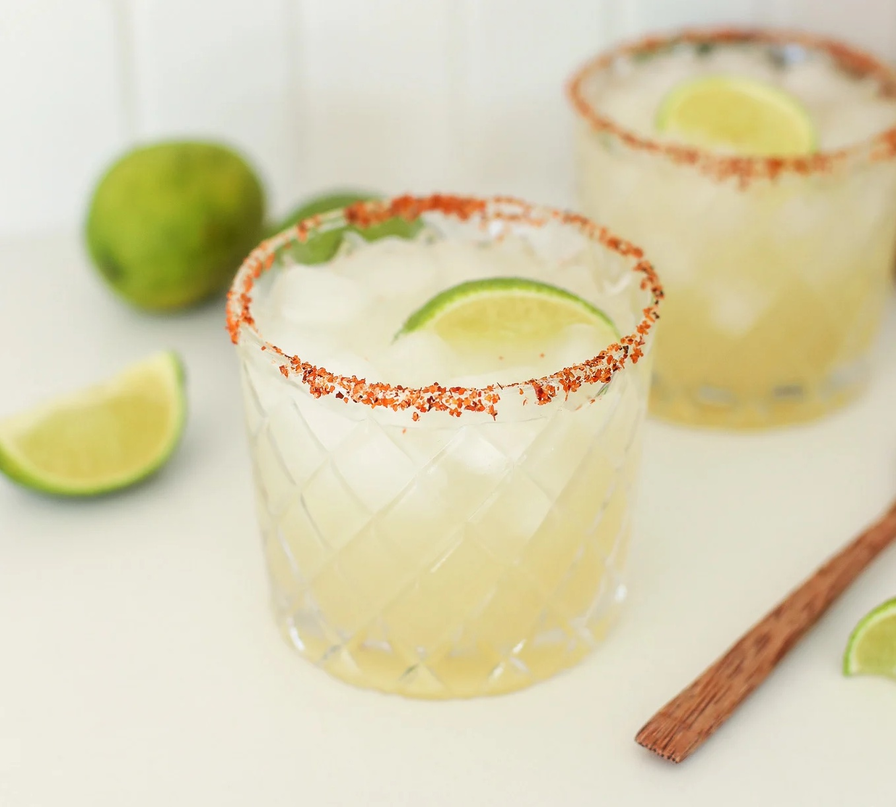

Margarita

The traditional margarita with a twist.
A simple blend of fresh lime juice, tequila, orange liquer, and a little sweetner.
The twist comes from replacing the traditional salt rim with a tajin salt, which provides the drink with a pleasant spice.
Recipe
- Tajin for rimming the glass
- 2 ounces of blanco tequila
- 3/4 ounce oraange liquer
- 3/4 ounce lime juice
- 1 teaspoon agave nectar
- Lime wedge for garnish
Steps
- Prepare a rocks glass with the salted tajin rim and ice.
- Combine all of ingredients except for the lime wedge in a cocktail shaker.
- Add ice and shake until chilled.
- Strain into the rocks glass.
- Garnish with a lime wedge.